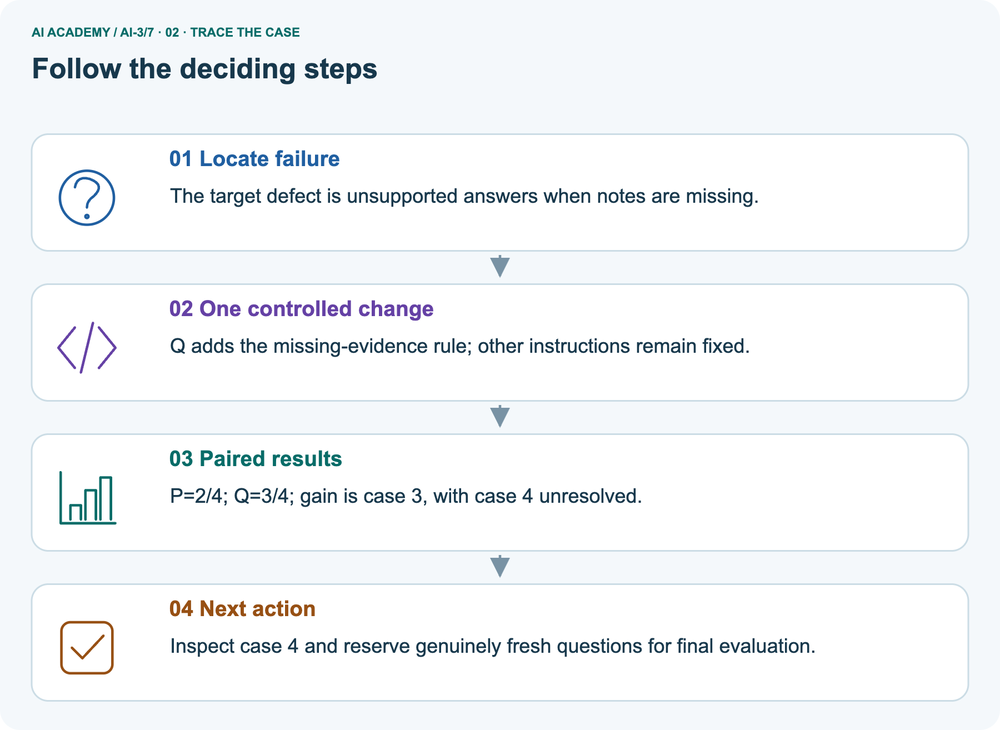
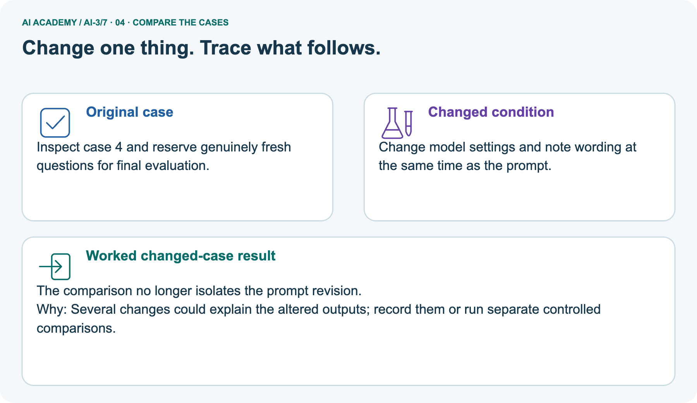
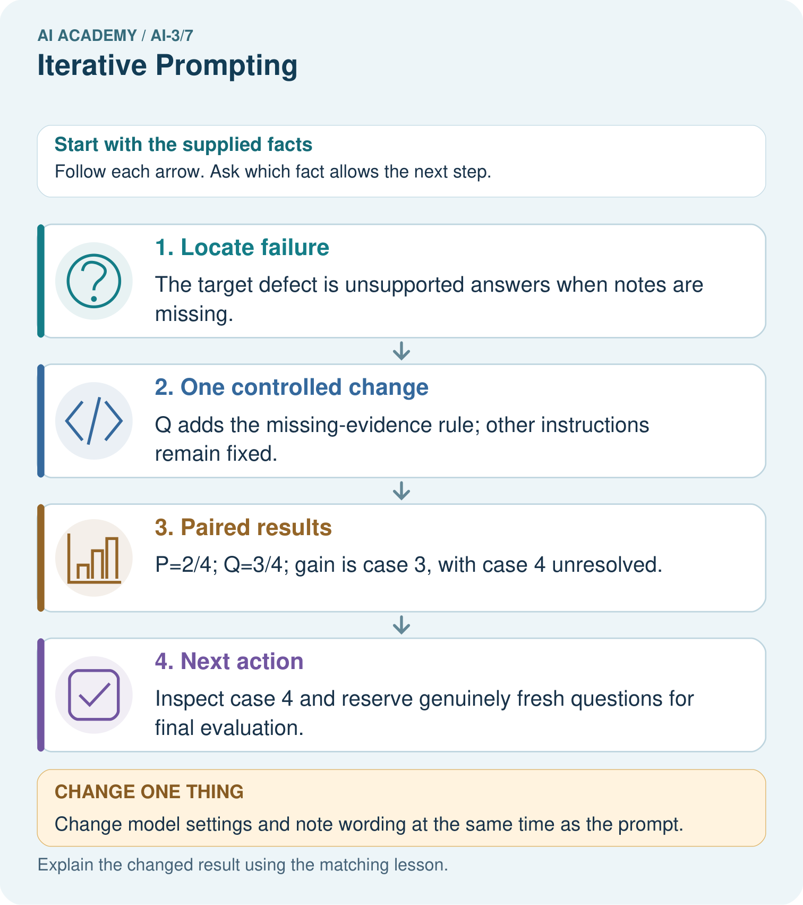
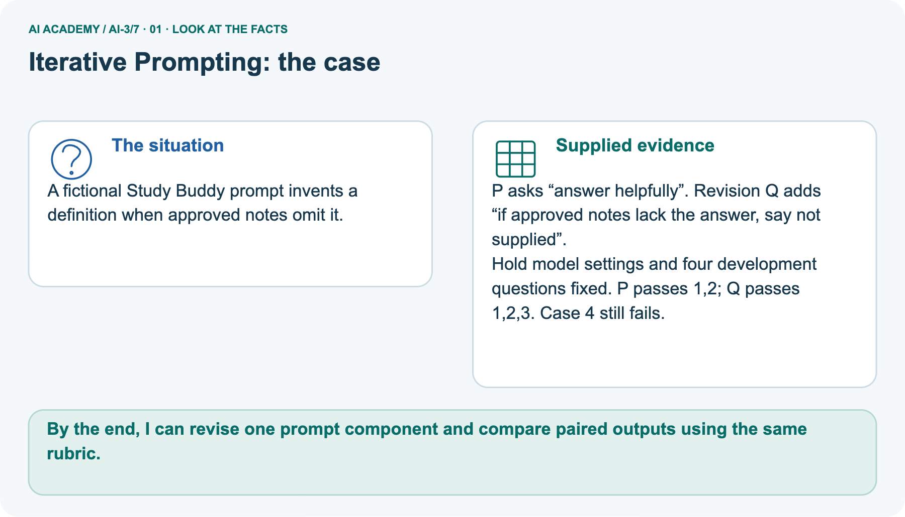
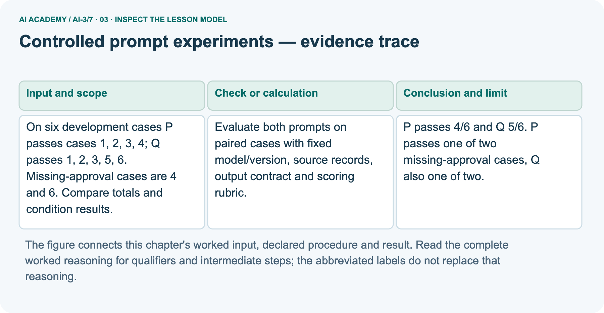
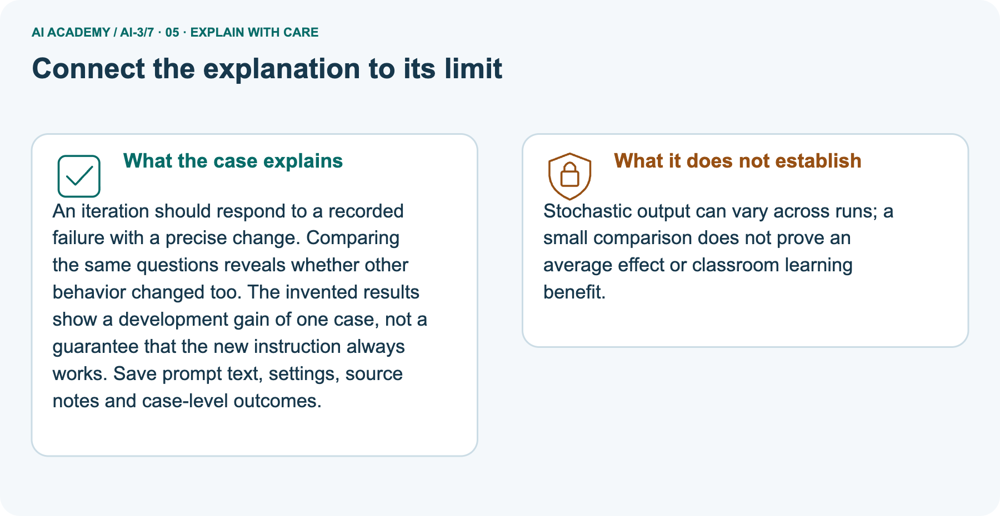
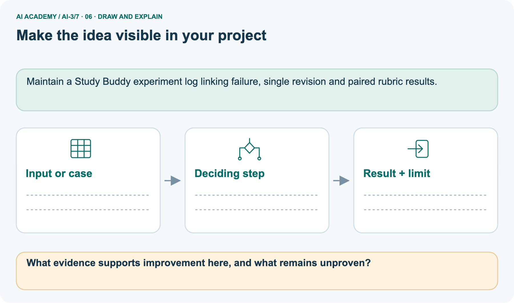

AI Academy · Level 3 · Grade 8 · Week 7 · Student lesson
Iterative Prompting
Learn to understand, design, build, test and explain AI systems responsibly.
Project: Verified Study Buddy
THE CONNECTED WEEK
Diagnose the failure. Change one component. Keep the record.
Revise prompts through paired evidence while preserving unresolved cases and unknown outcomes.
Keep one habit: Comparison contract → complete P/Q outputs → three-version log → separate quantitative review → independent design.
Main lesson · Section 1
Which recorded failure should the next revision address?
Change one prompt component and preserve the comparison evidence.
Your learning goals
I can explain the mechanism and terminology of controlled prompt experiments.
I can apply the stated procedure to a new case with a traceable result.
I can identify an assumption or limitation and design a revealing follow-up.
Recall the rubric and evidence boundary
Close your notes first. A rough first answer helps us choose the right starting point; it is not a score for your ability.
Recall Examples and Rubrics: keep the approved factual source, observable criteria and mandatory gates separate from a format example. Use the same rubric when comparing a prompt revision.
Your end goal
By the end, I can revise one prompt component and compare paired outputs using the same rubric.
Earlier wording, alternatives and picture transcripts
Your learning target
Remember before reading
Without opening the old lesson, explain one key idea from Examples and Rubrics. Give an example and a mistake that the idea helps you avoid.
Without opening the old lesson, explain one key idea from Sampling and Variability. Give an example and a mistake that the idea helps you avoid.
Without opening the old lesson, explain one key idea from Predictive and Generative AI. Give an example and a mistake that the idea helps you avoid.
After trying, check the relevant lesson or ask your teacher. Change the part of your explanation that the evidence shows was wrong.
Week 7: Iterative Prompting
Revision should respond to diagnosed output failures.

CREATOR MISSION
Keep a three-version prompt log with reasons for each change.
Creator name and date:
Readiness for the connected explanation
This week’s end goal
Main lesson · Section 2
Diagnose before editing the prompt
The task, source, settings and rubric belong in the experiment log.
The controlled-revision idea
A prompt experiment compares complete specifications using the same task cases. Define success before inspecting outputs; change one intended instruction and preserve other settings.
Label constructed results and missing evidence
Begin by writing the question the procedure is intended to answer. Identify the information already supplied, the information it will produce and the information still missing.
These are constructed classroom examples; they do not require live accounts, private records or an external service. Do not treat a plausible explanation as a measured outcome.
Earlier wording, alternatives and picture transcripts
PICTURE STORY
Notice → Predict → Explain
Begin with visible evidence. Do not explain more than the picture and information support.
MYSTERY
The learners must use iterative prompting to solve a problem. What information do they have? What decision or calculation do they make? What would count as evidence that it worked?
Three observations (what you can point to):
My prediction and the clue supporting it:
A closer explanation
Main lesson · Section 3
Compare paired cases without hiding a regression
The six-case W2 record is a separate quantitative review, not the four-question pictured experiment.
Freeze cases, sources and evaluation conditions
Evaluate both prompts on paired cases with fixed model/version, source records, output contract and scoring rubric. Use development results for selection, then reserve new final cases.
Score each case rather than counting attractive sentences.
Read the complete six-case record
| Separate six-case development record | P | Q |
|---|---|---|
| Passing IDs | 1,2,3,4 | 1,2,3,5,6 |
| Missing-approval slice IDs4,6 | passes4, fails6 | fails4, passes6 |
| All-case denominator | 6 | 6 |
Keep denominators and the raw record
Before applying the procedure, write its units, denominator or decision boundary where relevant. A partner should be able to repeat each step using the same inputs.
If a required input is absent or violates the stated contract, record that condition explicitly instead of quietly replacing it with a convenient value.
Explain what the visual evidence represents
Point to the input, the deciding step and the result in this week’s visual. Explain the same step in ordinary words. A picture helps when you can say what each part represents.
Earlier wording, alternatives and picture transcripts
VISUAL MECHANISM
Input → Process → Output
Trace the information. At each stage, ask what changed and how you could test it.

↓

↓

Which stage could fail even when the other two are correct? Explain:
A closer explanation
Controlled prompt experiments — evidence trace
Connect the picture and the explanation
Main lesson · Section 4
Compare a focused revision with simultaneous unrelated changes
A better-looking output does not identify which change helped.
Four pictures with a purpose

Normal case: predict the result and deciding evidence.

Boundary case: identify the exact limit.

Missing information: name what must be clarified.

Transfer case: explain which procedure still applies.
Choose a revealing case
Which case is most likely to reveal a hidden assumption? Why?
Predict the supplied changed case
Change: Change model settings and note wording at the same time as the prompt.
Check after predicting
Prediction: The comparison no longer isolates the prompt revision.
Reason: Several changes could explain the altered outputs; record them or run separate controlled comparisons.
Earlier wording, alternatives and picture transcripts
CASE GALLERY
Four Tests, Four Kinds of Evidence
A system is not understood until it survives more than one comfortable example.
NORMAL CASE: predict and name evidence. BOUNDARY CASE: predict and name evidence.
MISSING INFORMATION: predict and name evidence. TRANSFER CASE: predict and name evidence.
Change one thing in the pictured case
Main lesson · Section 6
Trace a separate four-question prompt revision
A case-level gain leaves the unresolved failure visible.
Read the pictured P-to-Q change and recorded outcomes
A fictional Study Buddy prompt invents a definition when approved notes omit it.
P asks “answer helpfully”. Revision Q adds “if approved notes lack the answer, say not supplied”.
Hold model settings and four development questions fixed. P passes 1,2; Q passes 1,2,3. Case 4 still fails.
Trace the gain and remaining failure



Read the picture one step at a time
An iteration should respond to a recorded failure with a precise change. Comparing the same questions reveals whether other behavior changed too.
The invented results show a development gain of one case, not a guarantee that the new instruction always works. Save prompt text, settings, source notes and case-level outcomes.
Predict changing settings and sources too
Change one thing: Change model settings and note wording at the same time as the prompt. Predict the result before checking the explanation. What remains the same?
Check after predicting



State what the small comparison cannot establish
Stochastic output can vary across runs; a small comparison does not prove an average effect or classroom learning benefit.
Read the labelled picture: What evidence supports improvement here, and what remains unproven?
Review · The separate six-case W2 result
On six development cases P passes cases 1, 2, 3, 4; Q passes 1, 2, 3, 5, 6. Missing-approval cases are 4 and 6. Compare totals and condition results.
P passes 4/6 and Q 5/6. P passes one of two missing-approval cases, Q also one of two. Q improves the aggregate while leaving this condition unchanged.
Earlier wording, alternatives and picture transcripts
WORKED EVIDENCE
Reason Step by Step
Predict first. Then check each step. A correct answer without visible reasoning is incomplete evidence.

1. Version 1 fails: answer is too advanced.
2. Change only audience constraint; Version 2 is age-fit but lacks evidence.
3. Add source-use rule; Version 3 cites the supplied passage.
4. Record scores and reasons so improvement is traceable.
Recalculate, retrace, or restate the reasoning in your own representation:
CHECK Did the evidence answer the exact question? Did the total, path, or source record stay consistent?
A closer explanation
Compare the intermediate evidence with the final statement. Explain why each number or decision follows from the stated inputs.
The conclusion belongs to this scenario and procedure; changing the inputs, evaluation population or authority can change what it establishes. Retain the raw record so a later revision can be compared honestly.
Learn from the worked case
Cover the result before checking it. Say what is given, choose the procedure, and follow one step at a time. Then uncover the result and explain your first mismatch. Ask why a step is allowed, not only what number it produces.
A pictorial worked case: Iterative Prompting
The facts we will use



Why this result follows
What this example does not establish
Main lesson · Section 7
Keep the remaining failure beside the gain
An iteration record explains what changed and what is still unknown.
Repair the always-works argument
Claim to repair: Q passed one more question, so the missing-evidence instruction now always works. The supplied four-question record improves2/4 to3/4 but still fails case4. Inspect that output, preserve the failure and plan the next single revision. These are invented single-run development outcomes, not an estimate of average effect, untouched final performance or classroom learning benefit.
Propose a revealing next check
Earlier wording, alternatives and picture transcripts
ERROR DETECTIVE
Compare → Diagnose → Repair
Do not patch the answer. Find the earliest unsupported assumption, wrong step, or weak evidence.

| Evidence record | Expected | Actual | Likely cause / next test |
|---|---|---|---|
| normal case | works | ||
| boundary case | stated rule | ||
| missing input | safe response | ||
| fresh transfer | generalizes |
Repair one cause. Why is this repair better than changing several things?
A closer explanation
Complete the supported workbook tasks before attempting W4 independently. Record any hints or help used. After feedback, use the teacher's fresh retry rather than copying the earlier answer.
For a project, select a relevant new case, predict the outcome from the declared rule and preserve the result alongside any revision.
Main lesson · Section 8
Practise a paired-result trace with less help
Use the separate six-case data for W2 and the four-question picture for its own discussion.
Protect final evidence after development selection
Prompt selection on development cases cannot be reported as independent final performance.
Complete the six-case W2 trace
Practise with less help: Trace the worked case
Use workbook W2 for the connected example “Controlled prompt experiments”. First fill the input and rule boxes. Try the middle steps before asking for a hint. After a hint, try the next step yourself.
| Plan | Do | Check |
|---|---|---|
| What is given? Which rule or procedure applies? | Record each intermediate step. | Does the result follow? What remains unknown? |
Repair an all-future-cases claim
Use the worked case for Controlled prompt experiments. Proposed explanation: “The worked result establishes every future case”. Decide whether this explanation is supported.
Point to the step or supplied fact that decides; explain your repair if needed.
Answer on your own before discussion. If you are unsure, say which step you need help with.
Check your reasoning
Explain the pictured improvement and limit
What evidence supports improvement here, and what remains unproven?
Explain the picture
Keep independent work separate
This is supported practice. Keep the separately named independent case for an attempt before feedback.
Earlier wording, alternatives and picture transcripts
LOGIC STUDIO
Specify Before You Run
Prompts, schemas, retrieval, tool calls, and code are inspectable parts of one AI product.

SET task, audience, constraints, output_schema LOAD approved_context or retrieval_result CALL model or allowed_tool VALIDATE fields, claims, citations, and safety IF evidence missing: ask, retrieve, or abstain RETURN useful output + source trail + limitations
Trace one input. Which line changes the state or chooses a path?
A closer explanation
A useful check asks what would make the reasoning fail. Distinguish a failure to execute the declared procedure from a weakness in the procedure itself.
The first may require a correction; the second requires an explicitly revised method and new evidence. Preserve unsuccessful cases so an improved result cannot hide the original problem.
Explain your trace to a partner. Your partner points to one step to check. Swap roles on the next case. Each person writes their own explanation.
Main lesson · Section 9
Inspect complete outputs and keep a truthful three-version log
The third revision is a proposal, not a fabricated measured improvement.
The approved source and fixed rubric
Complete fictional source N: condensation changes water vapour into liquid water; freezing changes liquid water into ice. No definition of melting or evaporation is supplied. Fixed task wrapper: for each requested term, produce exactly Term and Meaning using approved N. Full pass requires both fields, correct requested term and meaning supported by N; when no definition exists, the rubric expects not supplied.
Model/settings are declared fixed for these invented output records; no actual service/version is supplied or run.
Three complete prompt versions and evidence status
| Version | Complete variable prompt text appended to the fixed wrapper | Status |
|---|---|---|
| P | Answer helpfully. | Supplied invented outputs below |
| Q | Answer helpfully. If approved notes lack the answer, say not supplied. | Supplied invented outputs below |
| R | Answer helpfully. If approved notes lack the answer, say not supplied. Before drafting, check whether N explicitly defines the requested term. | Proposed next version; not run |
Four paired complete output cards
| Case/request | Complete P field contents | Complete Q field contents |
|---|---|---|
| 1 condensation | Term: condensation; Meaning: water vapour changes into liquid water | Term: condensation; Meaning: water vapour changes into liquid water |
| 2 freezing | Term: freezing; Meaning: liquid water changes into ice | Term: freezing; Meaning: liquid water changes into ice |
| 3 melting | Term: melting; Meaning: ice changes into liquid water | Term: melting; Meaning: not supplied |
| 4 evaporation | Term: evaporation; Meaning: liquid water changes into vapour | Term: evaporation; Meaning: liquid water changes into vapour |
Score, diagnose and plan the next controlled revision
Three-version log investigation: score every supplied P/Q output against N and the fixed rubric before seeing the pictured totals. Case3 improves because Q uses the required fallback; case4 remains unsupported even if its statement could be true outside this source-only contract. Record exact P/Q text, diagnosed defect, one added missing-evidence rule, per-case judgments and the unresolved case.
For R, record the one added source-check step and predicted behavior before a future test; retain not run instead of inventing results. Plan identical development cases/settings and a prespecified repeated-run scheme if outputs vary. Fresh final cases must be reserved after selection. A partner can audit these paper judgments, but the invented records do not reproduce a real prompt experiment.
Keep the three-bullet format-revision task for independent work.
Keep the evidence record
| Test / input | Prediction | Actual | Evidence / calculation | Change or keep? |
|---|---|---|---|---|
| normal | ||||
| boundary | ||||
| missing | ||||
| fresh transfer |
What did the hardest test teach you that the normal test did not?
Before trying: what do I expect, and why? While trying: which step could first go wrong? Afterwards: what did I actually observe, and what should change? Keep “not run” if you only traced the procedure.
Earlier wording, alternatives and picture transcripts
EVIDENCE LAB
Predict → Test → Record → Explain
Keep expected and actual results separate. Surprises are useful data when recorded honestly.

Use the complete source N, fixed task/rubric, P/Q output cards and three-version prompt log. Score every supplied result, preserve case4, and label R as a proposed unrun revision. No actual model calls or measured third-version improvement are supplied.
Plan → try → check
Main lesson · Section 14
Try alone: plan the fresh three-bullet format repair
A correct format revision still needs a factual-preservation check.
Independent brief and scope
A factual response uses four paragraphs when the contract requires three bullets. Design a controlled prompt revision and evaluation.
Design the comparison; no revised outputs, source text or model scores are supplied. Fix the approved evidence, factual criteria, task cases and model/settings while changing the format instruction. Define three-bullet compliance separately from factual support, and preserve unrun outcomes as unknown.
Your first attempt and help record
Attempt this case before feedback. Record any help. Earlier examples below are further practice; a case already practised with feedback cannot establish fresh transfer.
Your teacher has the independent answer and scoring criteria. Complete the matching workbook week to keep your practice evidence together.
Use feedback afterwards
Attempt the independent case before hints. Record whether you worked alone, used a hint or followed a model. After feedback, fix the first unsupported step and explain why it changed.
A later check uses a changed case, not a copied answer.
Earlier wording, alternatives and picture transcripts
Independent case: Changed independent case
Week 7 Independent application
Close the worked explanation. Apply the idea to this different question without copying.
You change a prompt's audience, length and source rules together; the result improves. What can you conclude, and how would you investigate the cause?
My answer, with a trace, calculation or supporting evidence
Create and test
Change one relevant detail. Predict the result before testing. Include a boundary or missing-information case when it helps reveal a limit.
My changed input and expected result
Connect to your project
Maintain prompt version, diagnosed failure, change, and before/after rubric scores.
The evidence I will keep
Transfer practice from the original programme
A summary has accurate facts but uses unexplained terms. Propose one prompt change and a comparison that checks both accessibility and factual preservation.
Use feedback to improve
Main lesson · Section 11
Link each project revision to a diagnosed failure
Preserve the actual record and the boundary of its evidence.
This week’s concrete contribution
Keep the Verified Study Buddy log as version, exact prompt, frozen task/source/settings, diagnosed criterion failure, one revision, predicted outcome, observed result or not-run status, regressions and remaining limits. Reuse the same development cases for controlled diagnosis; after selection, collect fresh final evidence.
Separate format compliance, factual support and useful explanation rather than promoting a favourite answer.
Maintain a Study Buddy experiment log linking failure, single revision and paired rubric results.
Keep the checkpoint and human choice
THIS WEEK’S CHECKPOINT Maintain prompt version, diagnosed failure, change, and before/after rubric scores.
SYSTEM MAP Learner need → prompt/schema → approved sources/retrieval → model/tool → structured answer → verification → human decision
What will you add, change, or verify in the project this week?
What should remain under human control?
RESPONSIBLE DESIGN Collect only necessary information. Show uncertainty and limits. Never confuse fluent output with verified truth.
Earlier wording, alternatives and picture transcripts
CUMULATIVE PROJECT
Verified Study Buddy
Every week adds one inspectable piece. The system must show how it reached a result.

Evidence for your project
Main lesson · Section 16
Finish: name the failure, one revision and comparison evidence
Do not turn development selection into a final result.
Explain without notes
Close your notes. Explain this goal in your own words: Explain the mechanism and terminology of controlled prompt experiments
Plan a changed-case return
If you are unsure, return to the worked picture and explain one arrow. If you are ready, change an input or assumption and justify your prediction.
Save your workbook evidence. At the next review, try a different case before opening your old answer.
Reference bank and extra practice
Choose the reference that helps your next step.
Your quick word guide
Reference · Section 5
Your quick word guide
Use the words to explain a particular step, record or limit.
Core vocabulary
| Word | My own example | Not this / boundary |
|---|---|---|
| iteration | One repeat of a process, often followed by inspection and revision. | |
| failure diagnosis | An investigation locating where and why a process failed. | |
| version | An identified state of a document, dataset, model or program. | |
| change log | A record of what changed, when it changed and why. |
Terms for the connected explanation
| Word | Meaning |
|---|---|
| Paired case | The same case evaluated under each compared procedure |
| Rubric | Prespecified criteria for judging an output |
| Regression | A previously passing condition that fails after a change |
Earlier wording, alternatives and picture transcripts
VOCABULARY LAB
Words You Can Use to Reason
A definition matters when you can recognize the idea, use it, and contrast it with a near-miss.


Words used in the closer explanation
Choose a stronger thinking challenge
Reference · Section 10
Choose a stronger thinking challenge
Choose the next useful challenge rather than treating the whole ladder as compulsory.
Pick your next step
1 • NAME: Define the concept without repeating the textbook.
2 • TRACE: Show the information, state, branch, calculation, or evidence path.
3 • APPLY: Solve a different example independently.
4 • CHALLENGE: Find a boundary case, counterexample, or unfair outcome.
5 • EXPLAIN LIMITS: Say when the result should not be trusted or used alone.
My strongest evidence of independent understanding:
Earlier wording, alternatives and picture transcripts
MASTERY
From Knowing the Word to Owning the Idea
Move upward only when you can produce evidence without copying the worked example.

Reference: check your explanation
Reference · Section 12
Reference: check your explanation
Use after practice. Design a new format-revision evaluation independently is the selected independent case.
Check the evidence and its limit
1. My fresh example, trace, calculation, or design:
2. My evidence that it works (include a boundary or missing-data case):
3. One limitation, fairness concern, or situation needing human review:
Self-check and record
SELF-CHECK □ I explained the mechanism □ I used evidence □ I tested a fresh case □ I named a limitation □ I can answer ‘why?’
Earlier wording, alternatives and picture transcripts
INDEPENDENT MASTERY PROOF
Checklist for explaining this week’s idea
Use after practice. Design a new format-revision evaluation independently is the selected independent case.

EXPLANATION CHECK Require one format change, fixed evidence and settings, separate factual checks and fresh final cases.
Extra practice: Revise one cause and retest
Reference · Section 13
Extra practice: Revise one cause and retest
Try the question before opening its worked explanation.
Read the supplied case and question
A factually correct explanation is too difficult for a nine-year-old.
Make and test one focused revision.
Your explanation
Which detail supports the answer, and why does it matter?
Check after trying
Constrain vocabulary and request a concrete example. Compare readability and factual preservation on the same passages.
| Evidence or stage | Value or result |
|---|---|
| Diagnose | Too difficult for a nine-year-old |
| Revise | Simpler vocabulary and one concrete example |
| Retest | Use the same passages |
| Compare | Readability and factual preservation |
Earlier wording, alternatives and picture transcripts
Week 7 Worked case
Use the supplied details to practise the weekly concept before attempting the independent question. This case extends the illustrated lesson.
The situation
The question
Worked explanation
Explain it in your own words
Trace the supplied case visually
Revise one cause and retest
A factually correct explanation is too difficult for a nine-year-old.
Make and test one focused revision.
Constrain vocabulary and request a concrete example. Compare readability and factual preservation on the same passages.
Reference: original lesson checklist
Reference · Section 15
Reference: original lesson checklist
Use an additional checklist when it helps inspect your explanation.
Targets and evidence
| By the end, I can | How I will show it |
|---|---|
| Explain the mechanism and terminology of controlled prompt experiments | Explain the deciding step, show a trace or test, and state one limit. |
| Apply the stated procedure to a new case with a traceable result | Explain the deciding step, show a trace or test, and state one limit. |
| Identify an assumption or limitation and design a revealing follow-up | Explain the deciding step, show a trace or test, and state one limit. |
Keep your route and first prediction
Remember → watch and explain → try with help → investigate → try independently → keep project evidence. Your teacher may spread this lesson across several classes.
Keep your first prediction. Compare it with what the evidence shows and explain any change.
Earlier wording, alternatives and picture transcripts
Start with this question: A fictional Study Buddy prompt invents a definition when approved notes omit it.
Extra practice: pictures, repair and feedback
Reference · Section 17
Extra practice: pictures, repair and feedback
Attempt each question before opening its explanation. Use one browser or paper copy.
First supported question
A fictional Study Buddy prompt invents a definition when approved notes omit it.
Which labelled step matches this detail? Inspect case 4 and reserve genuinely fresh questions for final evaluation.
1. Locate failure
2. Next action
3. One controlled change
4. Paired results
Hint if needed: Read the steps in the pictorial case. Match the supplied detail to the stage that performs or records it.
Practice 1: explain the deciding evidence
Check the first explanation
After your attempt, compare with the supported explanation: Next action Inspect case 4 and reserve genuinely fresh questions for final evaluation. An iteration should respond to a recorded failure with a precise change.
Comparing the same questions reveals whether other behavior changed too. The invented results show a development gain of one case, not a guarantee that the new instruction always works.
Save prompt text, settings, source notes and case-level outcomes.
Changed-case question
Changed-case practice: Change model settings and note wording at the same time as the prompt. Which conclusion is supported by the supplied facts?
1. We can decide the result without examining the changed input or the procedure.
2. This one example guarantees correct results for every future input.
3. The comparison no longer isolates the prompt revision.
Hint if needed: Use the changed condition and the deciding step in the pictorial trace. The answer must say what follows from those facts.
Practice 2: explain the deciding evidence
Check the changed case
After your attempt, compare with the supported explanation: The comparison no longer isolates the prompt revision. Several changes could explain the altered outputs; record them or run separate controlled comparisons.
Repair and save your work
Review Examples and Rubrics (ai-3/6). Goal: Distinguish a format example from approved factual evidence. Short practice: Explain why neither original nor changed draft is a full pass, and provide a complete repaired card.. Return to this week and explain what you changed.
Review Sampling and Variability (ai-3/4). Goal: Sample from a distribution using explicit cumulative intervals. Short practice: Does T=0.5 make B impossible, and does choosing A guarantee factual accuracy?.
Return to this week and explain what you changed.
Review Predictive and Generative AI (ai-3/1). Goal: Distinguish discriminative prediction from generation by inspecting the requested output.
Short practice: Identify the first unsupported claim and explain what source would be needed before asserting it.. Return to this week and explain what you changed.
Use Download completed work in the hosted lesson to export your answers, reflections, practice feedback and code-run evidence. Open the HTML copy to read or print it.
Drafts stay in this browser when storage is available; clear drafts on a shared device.
Earlier wording, alternatives and picture transcripts
Use this supported practice once, in the browser or on paper. Keep the reserved independent assessment for a separate first attempt before teacher feedback.
Repair a missing building block
Keep your completed work
Reference: the six-picture journey
Reference · Section 18
Reference: the six-picture journey
Revisit the picture that serves the current question; key diagrams already sit beside the main explanation.
01. Iterative Prompting: the case



A fictional Study Buddy prompt invents a definition when approved notes omit it. Supplied facts: P asks “answer helpfully”. Revision Q adds “if approved notes lack the answer, say not supplied”.
Hold model settings and four development questions fixed. P passes 1,2; Q passes 1,2,3. Case 4 still fails.
Point to the given fact that matters most. Explain why it matters.
02. Follow the deciding steps
Locate failure: The target defect is unsupported answers when notes are missing. → One controlled change: Q adds the missing-evidence rule; other instructions remain fixed. → Paired results: P=2/4; Q=3/4; gain is case 3, with case 4 unresolved. → Next action: Inspect case 4 and reserve genuinely fresh questions for final evaluation.
Point to each numbered stage and explain which recorded input it uses.
03. Controlled prompt experiments — evidence trace



Controlled prompt experiments — evidence trace. On six development cases P passes cases 1, 2, 3, 4; Q passes 1, 2, 3, 5, 6. Missing-approval cases are 4 and 6.
Compare totals and condition results. | Evaluate both prompts on paired cases with fixed model/version, source records, output contract and scoring rubric. | P passes 4/6 and Q 5/6.
P passes one of two missing-approval cases, Q also one of two.
Read the labels and values. Explain the relationship the model shows.
04. Change one thing. Trace what follows.
Original case: Inspect case 4 and reserve genuinely fresh questions for final evaluation. Changed condition: Change model settings and note wording at the same time as the prompt.
Expected result: The comparison no longer isolates the prompt revision. Reason: Several changes could explain the altered outputs; record them or run separate controlled comparisons.
Predict before checking the worked changed-case result. Name what changed and what the supplied facts allow you to conclude.
05. Connect the explanation to its limit



An iteration should respond to a recorded failure with a precise change. Comparing the same questions reveals whether other behavior changed too.
The invented results show a development gain of one case, not a guarantee that the new instruction always works. Save prompt text, settings, source notes and case-level outcomes.
Limit: Stochastic output can vary across runs; a small comparison does not prove an average effect or classroom learning benefit.
Explain the case, then point to a limit on the claim.
06. Make the idea visible in your project



Maintain a Study Buddy experiment log linking failure, single revision and paired rubric results. Draw your input, deciding step, result and limit.
Supported question: What evidence supports improvement here, and what remains unproven?
Draw your project trace and justify the deciding step using evidence.